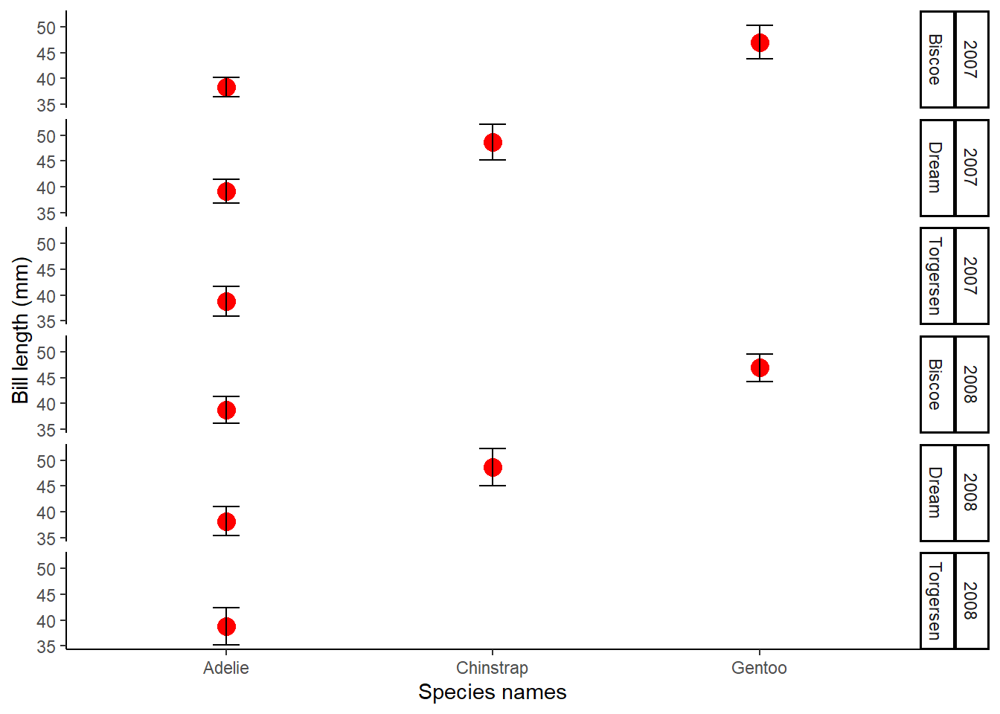
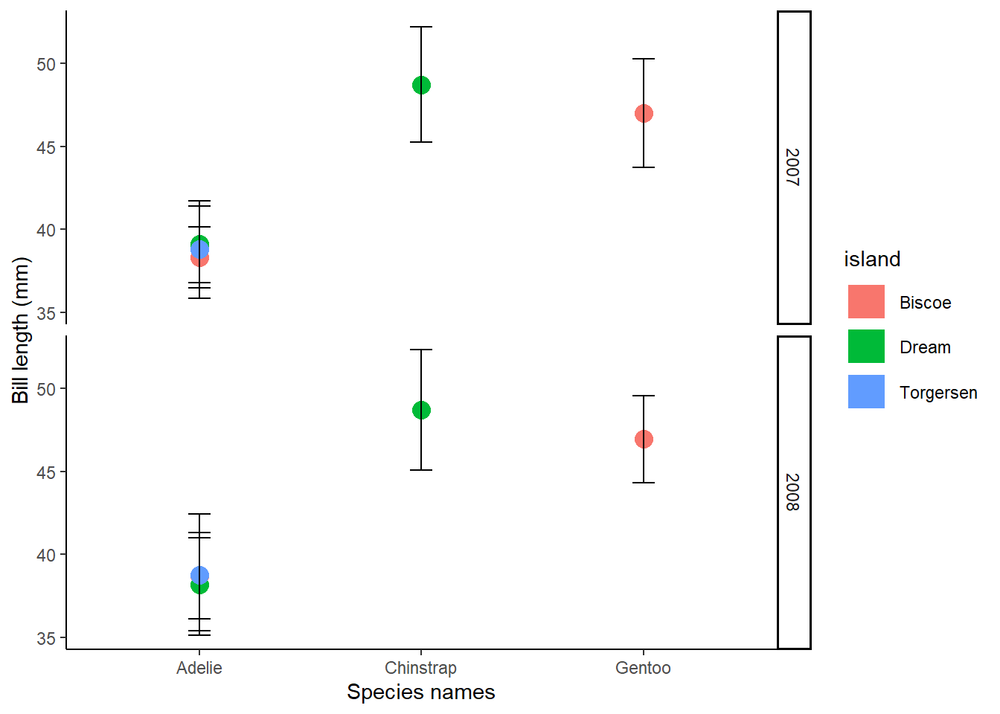
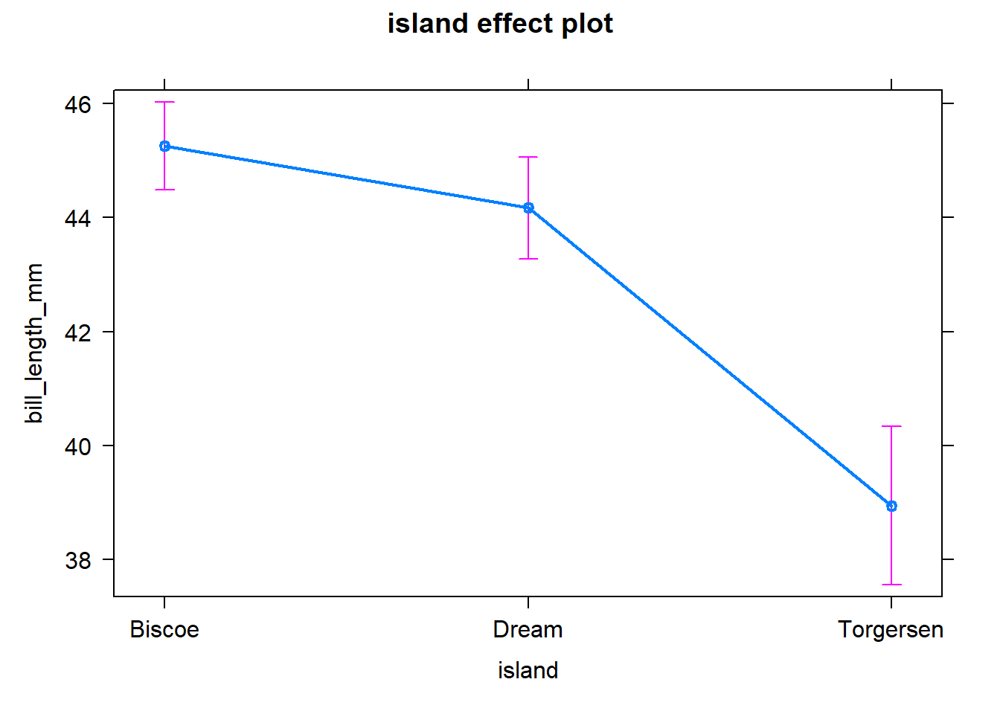
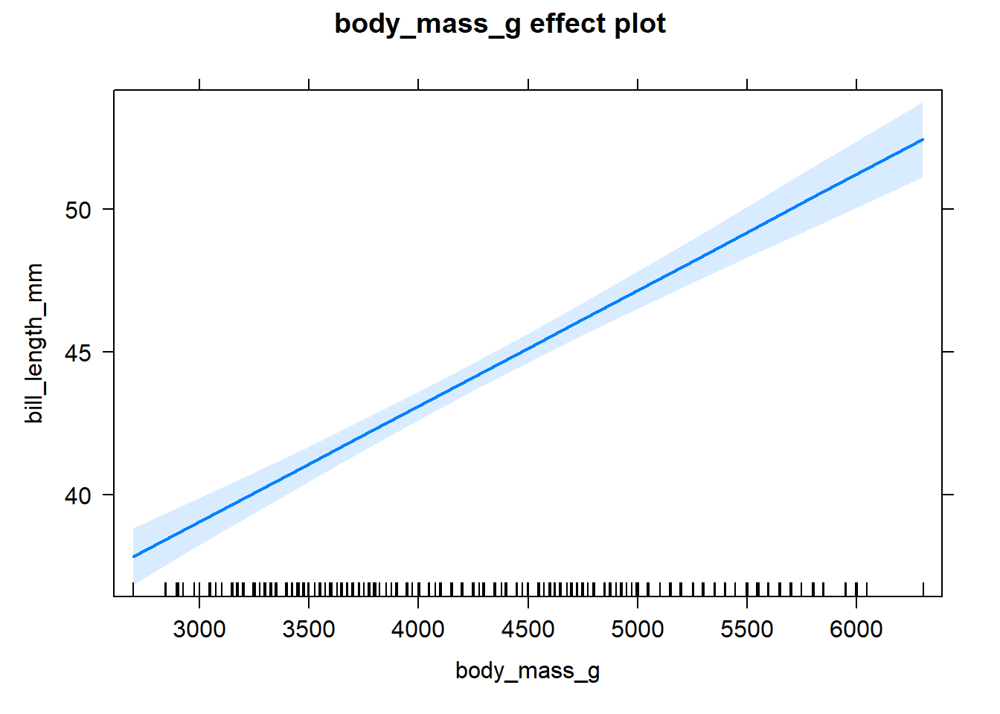
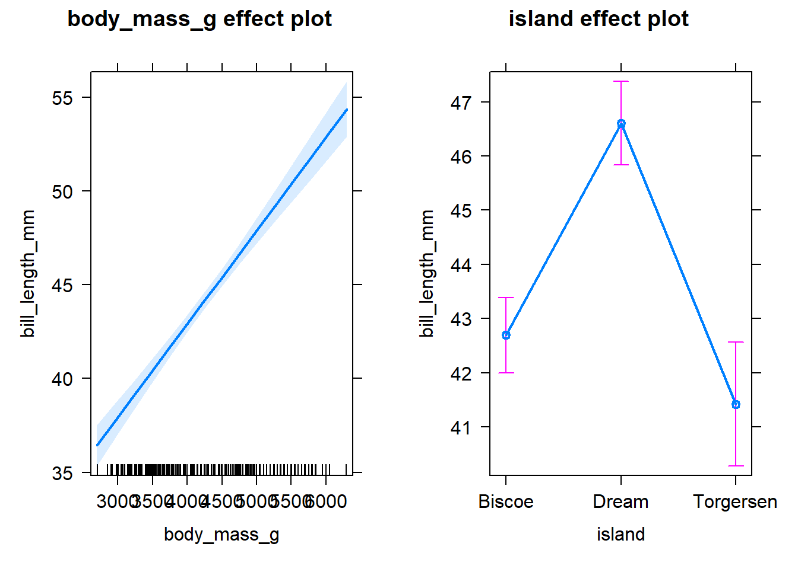

Download the script for this session at the link below (Click Link –> Right Click on Page –> Save Page As):
The most basic computing one can do on R is arithmetic
1+3## [1] 41+(4*2)## [1] 91+(4^2) ##^: exponent## [1] 17Trigonometric functions
sin(30)## [1] -0.9880316log10 (10)## [1] 1log10 (20)## [1] 1.30103Comparisons
2 == 2## [1] TRUE2 == 4## [1] FALSE1 < 2## [1] TRUEWe will continue to work with the penguins data from the data visualisation section. These data have already been cleaned. load the processed data
#### Extra packages
install.packages('broom')
install.packages('stargazer')
install.packages('effects')
#### Load libraries
library(readxl)
library(tidyverse)
library(janitor)
library(dplyr)
library(palmerpenguins)
library(broom)
library(stargazer)
library(effects)
library(ggplot2)#### Load data ----
penguins <- palmerpenguins::penguins
str(penguins)## tibble [344 × 8] (S3: tbl_df/tbl/data.frame)
## $ species : Factor w/ 3 levels "Adelie","Chinstrap",..: 1 1 1 1 1 1 1 1 1 1 ...
## $ island : Factor w/ 3 levels "Biscoe","Dream",..: 3 3 3 3 3 3 3 3 3 3 ...
## $ bill_length_mm : num [1:344] 39.1 39.5 40.3 NA 36.7 39.3 38.9 39.2 34.1 42 ...
## $ bill_depth_mm : num [1:344] 18.7 17.4 18 NA 19.3 20.6 17.8 19.6 18.1 20.2 ...
## $ flipper_length_mm: int [1:344] 181 186 195 NA 193 190 181 195 193 190 ...
## $ body_mass_g : int [1:344] 3750 3800 3250 NA 3450 3650 3625 4675 3475 4250 ...
## $ sex : Factor w/ 2 levels "female","male": 2 1 1 NA 1 2 1 2 NA NA ...
## $ year : int [1:344] 2007 2007 2007 2007 2007 2007 2007 2007 2007 2007 ...View(penguins)#### Selecting and filtering data
penguins_bill <- select (penguins, species, island, bill_length_mm, bill_depth_mm)
penguins_flipper <- select (penguins, species, island, flipper_length_mm)
penguins_bodymass <- select(penguins, -flipper_length_mm, -bill_length_mm, -bill_depth_mm)
penguins_09 <- filter(penguins, year == 2009)
penguins2 <- filter(penguins, year < 2008)
#### say for instance you want the penguin bill information for 2007 and 2008 only
##### option 1
penguins_bill2 <- select (penguins, species, island, bill_length_mm, bill_depth_mm, year)
penguins_bill2 <- filter(penguins_bill2, year < 2009)
penguins_bill2## # A tibble: 224 × 5
## species island bill_length_mm bill_depth_mm year
## <fct> <fct> <dbl> <dbl> <int>
## 1 Adelie Torgersen 39.1 18.7 2007
## 2 Adelie Torgersen 39.5 17.4 2007
## 3 Adelie Torgersen 40.3 18 2007
## 4 Adelie Torgersen NA NA 2007
## 5 Adelie Torgersen 36.7 19.3 2007
## 6 Adelie Torgersen 39.3 20.6 2007
## 7 Adelie Torgersen 38.9 17.8 2007
## 8 Adelie Torgersen 39.2 19.6 2007
## 9 Adelie Torgersen 34.1 18.1 2007
## 10 Adelie Torgersen 42 20.2 2007
## # … with 214 more rowspenguins_bill2 <- na.omit(penguins_bill2)
penguins_bill2## # A tibble: 223 × 5
## species island bill_length_mm bill_depth_mm year
## <fct> <fct> <dbl> <dbl> <int>
## 1 Adelie Torgersen 39.1 18.7 2007
## 2 Adelie Torgersen 39.5 17.4 2007
## 3 Adelie Torgersen 40.3 18 2007
## 4 Adelie Torgersen 36.7 19.3 2007
## 5 Adelie Torgersen 39.3 20.6 2007
## 6 Adelie Torgersen 38.9 17.8 2007
## 7 Adelie Torgersen 39.2 19.6 2007
## 8 Adelie Torgersen 34.1 18.1 2007
## 9 Adelie Torgersen 42 20.2 2007
## 10 Adelie Torgersen 37.8 17.1 2007
## # … with 213 more rows##### option 2
penguins_bill2_2 <- select(filter(penguins, year < 2009), species, island, bill_length_mm, bill_depth_mm, year)
penguins_bill2_2 <- na.omit(penguins_bill2_2)
penguins_bill2_2## # A tibble: 223 × 5
## species island bill_length_mm bill_depth_mm year
## <fct> <fct> <dbl> <dbl> <int>
## 1 Adelie Torgersen 39.1 18.7 2007
## 2 Adelie Torgersen 39.5 17.4 2007
## 3 Adelie Torgersen 40.3 18 2007
## 4 Adelie Torgersen 36.7 19.3 2007
## 5 Adelie Torgersen 39.3 20.6 2007
## 6 Adelie Torgersen 38.9 17.8 2007
## 7 Adelie Torgersen 39.2 19.6 2007
## 8 Adelie Torgersen 34.1 18.1 2007
## 9 Adelie Torgersen 42 20.2 2007
## 10 Adelie Torgersen 37.8 17.1 2007
## # … with 213 more rows##### option 3
## you can use the pipe function
Penguins_bill<-penguins %>%
filter(year < 2009) %>%
select(species, island, bill_length_mm, bill_depth_mm, year) %>%
na.omit()
Penguins_bill## # A tibble: 223 × 5
## species island bill_length_mm bill_depth_mm year
## <fct> <fct> <dbl> <dbl> <int>
## 1 Adelie Torgersen 39.1 18.7 2007
## 2 Adelie Torgersen 39.5 17.4 2007
## 3 Adelie Torgersen 40.3 18 2007
## 4 Adelie Torgersen 36.7 19.3 2007
## 5 Adelie Torgersen 39.3 20.6 2007
## 6 Adelie Torgersen 38.9 17.8 2007
## 7 Adelie Torgersen 39.2 19.6 2007
## 8 Adelie Torgersen 34.1 18.1 2007
## 9 Adelie Torgersen 42 20.2 2007
## 10 Adelie Torgersen 37.8 17.1 2007
## # … with 213 more rows##### mutate
Penguins_bill<-Penguins_bill %>% mutate(bill_length_m = bill_length_mm/1000) #added a new column with new units for bill_length
Penguins_bill## # A tibble: 223 × 6
## species island bill_length_mm bill_depth_mm year bill_length_m
## <fct> <fct> <dbl> <dbl> <int> <dbl>
## 1 Adelie Torgersen 39.1 18.7 2007 0.0391
## 2 Adelie Torgersen 39.5 17.4 2007 0.0395
## 3 Adelie Torgersen 40.3 18 2007 0.0403
## 4 Adelie Torgersen 36.7 19.3 2007 0.0367
## 5 Adelie Torgersen 39.3 20.6 2007 0.0393
## 6 Adelie Torgersen 38.9 17.8 2007 0.0389
## 7 Adelie Torgersen 39.2 19.6 2007 0.0392
## 8 Adelie Torgersen 34.1 18.1 2007 0.0341
## 9 Adelie Torgersen 42 20.2 2007 0.042
## 10 Adelie Torgersen 37.8 17.1 2007 0.0378
## # … with 213 more rowsPenguins_bill<-Penguins_bill %>% mutate(bill_depth_m = bill_depth_mm/1000)
##### group_by
Penguins_bill_mean<-Penguins_bill %>%
group_by(species, year) %>%
summarise(mean_bill_length_mm = mean(bill_length_mm))
Penguins_bill_mean## # A tibble: 6 × 3
## # Groups: species [3]
## species year mean_bill_length_mm
## <fct> <int> <dbl>
## 1 Adelie 2007 38.8
## 2 Adelie 2008 38.6
## 3 Chinstrap 2007 48.7
## 4 Chinstrap 2008 48.7
## 5 Gentoo 2007 47.0
## 6 Gentoo 2008 46.9Penguins_bill_mean<-Penguins_bill %>%
group_by(species, year) %>%
summarise(mean_bill_length_mm = mean(bill_length_mm)) %>%
arrange(desc(year))
Penguins_bill_mean## # A tibble: 6 × 3
## # Groups: species [3]
## species year mean_bill_length_mm
## <fct> <int> <dbl>
## 1 Adelie 2008 38.6
## 2 Chinstrap 2008 48.7
## 3 Gentoo 2008 46.9
## 4 Adelie 2007 38.8
## 5 Chinstrap 2007 48.7
## 6 Gentoo 2007 47.0Penguins_bill_mean<-Penguins_bill %>%
group_by(species, year) %>%
summarise(mean_bill_length_mm = mean(bill_length_mm))
Penguins_bill_mean## # A tibble: 6 × 3
## # Groups: species [3]
## species year mean_bill_length_mm
## <fct> <int> <dbl>
## 1 Adelie 2007 38.8
## 2 Adelie 2008 38.6
## 3 Chinstrap 2007 48.7
## 4 Chinstrap 2008 48.7
## 5 Gentoo 2007 47.0
## 6 Gentoo 2008 46.9alpha=0.05
Penguins_bill_Stats <- Penguins_bill %>%
group_by(species, island, year) %>%
summarise(
n=n(),
mean_bill_length_mm=mean(na.omit(bill_length_mm)),
bill_length_sd=sd(na.omit(bill_length_mm)),
mean_bill_depth_mm=mean(na.omit(bill_length_mm)),
bill_depth_sd=sd(na.omit(bill_length_mm)))
Penguins_bill_Stats## # A tibble: 10 × 8
## # Groups: species, island [5]
## species island year n mean_bill_lengt… bill_length_sd mean_bill_depth…
## <fct> <fct> <int> <int> <dbl> <dbl> <dbl>
## 1 Adelie Biscoe 2007 10 38.3 1.85 38.3
## 2 Adelie Biscoe 2008 18 38.7 2.59 38.7
## 3 Adelie Dream 2007 20 39.1 2.32 39.1
## 4 Adelie Dream 2008 16 38.2 2.79 38.2
## 5 Adelie Torge… 2007 19 38.8 2.93 38.8
## 6 Adelie Torge… 2008 16 38.8 3.65 38.8
## 7 Chinstrap Dream 2007 26 48.7 3.47 48.7
## 8 Chinstrap Dream 2008 18 48.7 3.62 48.7
## 9 Gentoo Biscoe 2007 34 47.0 3.27 47.0
## 10 Gentoo Biscoe 2008 46 46.9 2.64 46.9
## # … with 1 more variable: bill_depth_sd <dbl>##### Plot stats
names(Penguins_bill_Stats)## [1] "species" "island" "year"
## [4] "n" "mean_bill_length_mm" "bill_length_sd"
## [7] "mean_bill_depth_mm" "bill_depth_sd"StatsPlot<-ggplot(Penguins_bill_Stats, aes(x = species, y = mean_bill_length_mm))+
geom_line(size = 1, colour = "red")+
geom_point(shape = 19, size = 1, colour = "red")+
geom_errorbar(aes(ymin=mean_bill_length_mm-bill_length_sd, ymax=mean_bill_length_mm+bill_length_sd),width=.5, colour ="black", linetype = "solid")
StatsPlot<-ggplot(Penguins_bill_Stats, aes(x = species, y = mean_bill_length_mm))+
geom_line(size = 1, colour = "red")+
geom_point(shape = 19, size = 1, colour = "red")+
geom_errorbar(aes(ymin=mean_bill_length_mm-bill_length_sd, ymax=mean_bill_length_mm+bill_length_sd),width=.5, colour ="black", linetype = "solid")+
theme_classic()+
xlab("Species_Names")+
ylab("Bill_length (mm)")
StatsPlot<-ggplot(Penguins_bill_Stats, aes(x = species, y = mean_bill_length_mm))+
geom_line(size = 1, colour = "red")+
geom_point(shape = 19, size = 1, colour = "red")+
geom_errorbar(aes(ymin=mean_bill_length_mm-bill_length_sd, ymax=mean_bill_length_mm+bill_length_sd),width=.5, colour ="black", linetype = "solid")+
theme_classic()+
xlab("Species_Names")+
ylab("Bill_length (mm)")+facet_grid(rows=vars(year))
StatsPlot<-ggplot(Penguins_bill_Stats, aes(x = species, y = mean_bill_length_mm))+
geom_line(size = 8, colour = "red")+
geom_point(shape = 19, size = 4, colour = "red")+
geom_errorbar(aes(ymin=mean_bill_length_mm-bill_length_sd, ymax=mean_bill_length_mm+bill_length_sd),width=.1, colour ="black", linetype = "solid")+
theme_classic()+
xlab("Species names")+
ylab("Bill length (mm)")+facet_grid(rows=vars(year, island))
StatsPlot
StatsPlot2<-ggplot(Penguins_bill_Stats, aes(x = species, y = mean_bill_length_mm, col=island))+
geom_line(size = 8)+
geom_point(shape = 19, size = 4)+
geom_errorbar(aes(ymin=mean_bill_length_mm-bill_length_sd, ymax=mean_bill_length_mm+bill_length_sd),width=.1, colour ="black", linetype = "solid")+
theme_classic()+
xlab("Species names")+
ylab("Bill length (mm)")+facet_grid(rows=vars(year))
StatsPlot2
#### Categorical linear model ----
lm <- lm(bill_length_mm ~ island, data = penguins)
summary(lm)##
## Call:
## lm(formula = bill_length_mm ~ island, data = penguins)
##
## Residuals:
## Min 1Q Median 3Q Max
## -12.0677 -3.8559 0.2958 3.8175 14.3425
##
## Coefficients:
## Estimate Std. Error t value Pr(>|t|)
## (Intercept) 45.2575 0.3897 116.127 < 2e-16 ***
## islandDream -1.0897 0.5970 -1.825 0.0688 .
## islandTorgersen -6.3065 0.8057 -7.827 6.44e-14 ***
## ---
## Signif. codes: 0 '***' 0.001 '**' 0.01 '*' 0.05 '.' 0.1 ' ' 1
##
## Residual standard error: 5.036 on 339 degrees of freedom
## (2 observations deleted due to missingness)
## Multiple R-squared: 0.154, Adjusted R-squared: 0.149
## F-statistic: 30.86 on 2 and 339 DF, p-value: 4.86e-13#### Analysis of Variance ----
aov <- aov(bill_length_mm ~ island, data = penguins)
aov## Call:
## aov(formula = bill_length_mm ~ island, data = penguins)
##
## Terms:
## island Residuals
## Sum of Squares 1565.599 8598.607
## Deg. of Freedom 2 339
##
## Residual standard error: 5.03633
## Estimated effects may be unbalanced
## 2 observations deleted due to missingnesssummary(aov)## Df Sum Sq Mean Sq F value Pr(>F)
## island 2 1566 782.8 30.86 4.86e-13 ***
## Residuals 339 8599 25.4
## ---
## Signif. codes: 0 '***' 0.001 '**' 0.01 '*' 0.05 '.' 0.1 ' ' 1
## 2 observations deleted due to missingness##### Post-hoc test - if there is a significant difference
Tukey.aov <- TukeyHSD(aov)
Tukey.aov## Tukey multiple comparisons of means
## 95% family-wise confidence level
##
## Fit: aov(formula = bill_length_mm ~ island, data = penguins)
##
## $island
## diff lwr upr p adj
## Dream-Biscoe -1.089743 -2.495170 0.3156833 0.1628734
## Torgersen-Biscoe -6.306505 -8.203279 -4.4097305 0.0000000
## Torgersen-Dream -5.216762 -7.188974 -3.2445487 0.0000000#### Continuous linear model ----
lm2 <- lm(bill_length_mm ~ body_mass_g, data = penguins)
summary(lm2)##
## Call:
## lm(formula = bill_length_mm ~ body_mass_g, data = penguins)
##
## Residuals:
## Min 1Q Median 3Q Max
## -10.1251 -3.0434 -0.8089 2.0711 16.1109
##
## Coefficients:
## Estimate Std. Error t value Pr(>|t|)
## (Intercept) 2.690e+01 1.269e+00 21.19 <2e-16 ***
## body_mass_g 4.051e-03 2.967e-04 13.65 <2e-16 ***
## ---
## Signif. codes: 0 '***' 0.001 '**' 0.01 '*' 0.05 '.' 0.1 ' ' 1
##
## Residual standard error: 4.394 on 340 degrees of freedom
## (2 observations deleted due to missingness)
## Multiple R-squared: 0.3542, Adjusted R-squared: 0.3523
## F-statistic: 186.4 on 1 and 340 DF, p-value: < 2.2e-16#### Categorical and Continuous model ----
lm3 <- lm(bill_length_mm ~ body_mass_g + island, data = penguins)
summary(lm3)##
## Call:
## lm(formula = bill_length_mm ~ body_mass_g + island, data = penguins)
##
## Residuals:
## Min 1Q Median 3Q Max
## -10.4676 -2.3806 0.0498 2.4179 13.8966
##
## Coefficients:
## Estimate Std. Error t value Pr(>|t|)
## (Intercept) 21.7428965 1.6468756 13.203 < 2e-16 ***
## body_mass_g 0.0049861 0.0003431 14.532 < 2e-16 ***
## islandDream 3.9118982 0.5818015 6.724 7.56e-11 ***
## islandTorgersen -1.2723006 0.7216507 -1.763 0.0788 .
## ---
## Signif. codes: 0 '***' 0.001 '**' 0.01 '*' 0.05 '.' 0.1 ' ' 1
##
## Residual standard error: 3.957 on 338 degrees of freedom
## (2 observations deleted due to missingness)
## Multiple R-squared: 0.4793, Adjusted R-squared: 0.4747
## F-statistic: 103.7 on 3 and 338 DF, p-value: < 2.2e-16#### Summarise results ----
lm_coefficients <- tidy(lm)
lm2_coefficients <- tidy(lm2)
lm3_coefficients <- tidy(lm3)#### Plot effects ----
lm_effects <- allEffects(lm)
lm2_effects <- allEffects(lm2)
lm3_effects <- allEffects(lm3)
aov_effects <- allEffects(aov)
plot(lm_effects)
plot(lm2_effects)
plot(lm3_effects)
plot(aov_effects)#### Stargazer summary table ----
# export as a text; copy and paste
stargazer::stargazer(lm, lm2, lm3, type = 'text')### you can do this for the aov too##
## =============================================================================================
## Dependent variable:
## -------------------------------------------------------------------------
## bill_length_mm
## (1) (2) (3)
## ---------------------------------------------------------------------------------------------
## islandDream -1.090* 3.912***
## (0.597) (0.582)
##
## islandTorgersen -6.307*** -1.272*
## (0.806) (0.722)
##
## body_mass_g 0.004*** 0.005***
## (0.0003) (0.0003)
##
## Constant 45.257*** 26.899*** 21.743***
## (0.390) (1.269) (1.647)
##
## ---------------------------------------------------------------------------------------------
## Observations 342 342 342
## R2 0.154 0.354 0.479
## Adjusted R2 0.149 0.352 0.475
## Residual Std. Error 5.036 (df = 339) 4.394 (df = 340) 3.957 (df = 338)
## F Statistic 30.862*** (df = 2; 339) 186.443*** (df = 1; 340) 103.720*** (df = 3; 338)
## =============================================================================================
## Note: *p<0.1; **p<0.05; ***p<0.01